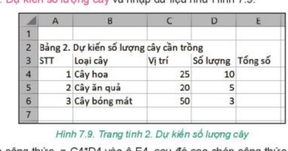
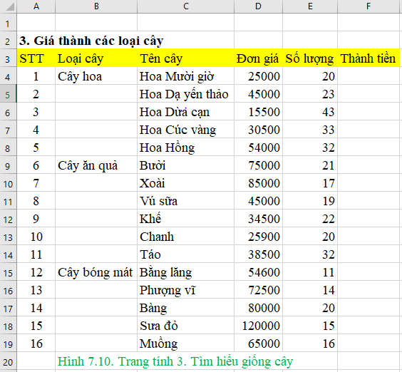
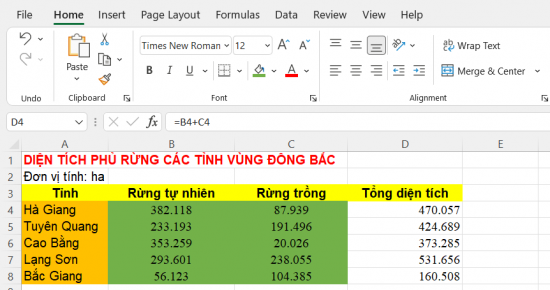

KẾ HOẠCH BÀI DẠY
MÔN: TIN HỌC 7 – BỘ SÁCH KẾT NỐI TRI THỨC VỚI CUỘC SỐNG
CHỦ ĐỀ 4: ỨNG DỤNG TIN HỌC
BÀI 7: TÍNH TOÁN TỰ ĐỘNG TRÊN BẢNG TÍNH (Tiết 2/2)
Nội dung: Thực hành tính toán và sao chép công thức – dự án "Trường học xanh"
Thời gian thực hiện: 1 tiết (45 phút) – SGK trang 37–38
I. MỤC TIÊU
1) Kiến thức
Tạo trang tính mới, đổi tên trang tính và nhập dữ liệu có cấu trúc cho dự án "Trường học xanh" (SGK trang 37).
Thiết lập công thức tính tổng số cây mỗi loại (=C4*D4) và tổng số cây cả ba loại (=E4+E5+E6); sao chép công thức cho các ô còn lại.
Tính cột Thành tiền (=D4*E4) cho 16 loại cây bằng cách sao chép công thức từ F4 xuống F19 (trang tính "3. Tìm hiểu giống cây", trang 38).
Định dạng cơ bản: chữ đậm, màu nền hàng tiêu đề, căn lề, điều chỉnh độ rộng cột; lưu tệp (THXanh.xlsx, Dientichrung.xlsx).
2) Năng lực
a) Năng lực chung
Tự chủ và tự học: tự thực hành độc lập, kiên trì sửa lỗi nhập liệu và lỗi công thức.
Giao tiếp và hợp tác: hỗ trợ, nhận xét sản phẩm thực hành của bạn cùng bàn.
Giải quyết vấn đề và sáng tạo: vận dụng công thức và sao chép công thức để giải quyết bài toán thực tế (số lượng cây, thành tiền, diện tích rừng).
b) Năng lực Tin học
NLa (Sử dụng và quản lí phương tiện công nghệ thông tin và truyền thông): thao tác thành thạo trên phần mềm bảng tính: tạo trang tính, nhập dữ liệu, công thức, định dạng, lưu tệp.
NLd (Ứng dụng công nghệ thông tin và truyền thông trong học và tự học): dùng bảng tính để tính toán số liệu cho dự án học tập.
c) Năng lực số (NLS)
1.3.TC1c – Quản lí dữ liệu, thông tin và nội dung số (mức L6–L7): nhập dữ liệu vào bảng tính có cấu trúc (nhiều trang tính, cột có tiêu đề) và lưu tệp đúng tên [GV đối chiếu lại CV3456].
5.2.TC1b – Chọn công cụ số và giải pháp công nghệ (mức L6–L7): dùng công thức và sao chép công thức để tính toán tự động cho nhiều dòng dữ liệu.
d) Năng lực Trí tuệ nhân tạo (AI)
A1 – Tính chủ động của con người (Xác thực kết quả): nêu được hậu quả khi không kiểm tra lại kết quả tính toán do công cụ AI đưa ra; đối chiếu với kết quả tính bằng công thức (câu hỏi nhỏ ở phần Vận dụng, GV tự soạn).
3) Phẩm chất
Chăm chỉ: hoàn thành đầy đủ các bài thực hành.
Trung thực: nhập đúng số liệu, ghi nhận kết quả đúng thực tế.
Trách nhiệm: bảo quản thiết bị phòng máy, lưu tệp đúng thư mục.
II. THIẾT BỊ DẠY HỌC VÀ HỌC LIỆU
1. Giáo viên
Phòng máy tính; máy chiếu hoặc Tivi; phần mềm bảng tính (Microsoft Excel hoặc tương đương); tệp THXanh.xlsx mẫu (tạo ở Bài 6); phần mềm quản lí lớp học (nếu có) để chiếu bài làm; Bảng kiểm đánh giá bài thực hành (phụ lục).
2. Học sinh
SGK Tin học 7 (trang 37–38), vở ghi, tệp THXanh.xlsx đã lưu ở Bài 6.
III. TIẾN TRÌNH DẠY HỌC
1. Khởi động (5 phút)
a) Mục tiêu:
Nhắc lại cách nhập công thức và sao chép công thức (trang 35–37); chuẩn bị tệp để thực hành.
b) Nội dung: HS trả lời nhanh 2 câu hỏi củng cố và mở tệp THXanh.xlsx.
c) Sản phẩm: Câu trả lời của HS; máy tính đã mở tệp THXanh.xlsx.
d) Tổ chức thực hiện:
| Hoạt động của giáo viên | Hoạt động của học sinh |
|---|---|
Bước 1: Chuyển giao nhiệm vụ
| Bước 1: Chuyển giao nhiệm vụ
|
Bước 2, 3: Thực hiện, báo cáo
| Bước 2, 3: Thực hiện, báo cáo
|
Bước 4: Kết luận, nhận định
| Bước 4: Kết luận, nhận định
|
2. Hoạt động 1: Thực hành nhập dữ liệu và tính tổng số cây (10 phút)
a) Mục tiêu:
Tạo trang tính mới, nhập dữ liệu, thiết lập công thức =C4*D4, sao chép công thức và tính tổng =E4+E5+E6 (NLS 1.3.TC1c, 5.2.TC1b).
b) Nội dung: Thực hiện bước 1–4 của mục 4 "Thực hành" (SGK trang 37): tạo trang tính "2. Dự kiến số lượng cây" theo Hình 7.9.
c) Sản phẩm: Trang tính "2. Dự kiến số lượng cây" có dữ liệu và công thức đúng: E4 = 250, E5 = 100, E6 = 150, E7 = 500.
d) Tổ chức thực hiện:
| Hoạt động của giáo viên | Hoạt động của học sinh |
|---|---|
Bước 1: Chuyển giao nhiệm vụ
 Hình 7.9: Trang tính 2. Dự kiến số lượng cây
| Bước 1: Chuyển giao nhiệm vụ
|
Bước 2: Thực hiện nhiệm vụ
| Bước 2: Thực hiện nhiệm vụ
|
Bước 3, 4: Báo cáo, nhận định
| Bước 3, 4: Báo cáo, nhận định
|
3. Hoạt động 2: Thực hành định dạng và lưu trang tính (8 phút)
a) Mục tiêu:
Định dạng bảng dữ liệu (chữ đậm, màu nền, căn giữa cột STT, độ rộng cột) và lưu tệp.
b) Nội dung: Thực hiện bước 5, 6 của mục 4 (SGK trang 38) trên trang tính "2. Dự kiến số lượng cây"; nhận xét chung kết quả cả mục 4.
c) Sản phẩm: Trang tính "2. Dự kiến số lượng cây" hoàn chỉnh, đã định dạng và lưu tệp THXanh.xlsx.
d) Tổ chức thực hiện:
| Hoạt động của giáo viên | Hoạt động của học sinh |
|---|---|
Bước 1: Chuyển giao nhiệm vụ
| Bước 1: Chuyển giao nhiệm vụ
|
Bước 2: Thực hiện nhiệm vụ
| Bước 2: Thực hiện nhiệm vụ
|
Bước 3, 4: Báo cáo, nhận định
| Bước 3, 4: Báo cáo, nhận định
|
4. Luyện tập (12 phút)
a) Mục tiêu:
Tạo trang tính mới, nhập danh mục 16 loại cây, tính Thành tiền bằng công thức và sao chép công thức (NLS 5.2.TC1b).
b) Nội dung: Làm bài Luyện tập 1, 2 (SGK trang 38): tạo trang tính "3. Tìm hiểu giống cây" như Hình 7.10; nhập =D4*E4 vào F4 rồi sao chép xuống F5:F19.
c) Sản phẩm: Trang tính "3. Tìm hiểu giống cây" có cột Thành tiền tính đúng cho 16 loại cây (bảng kết quả bên dưới).
d) Tổ chức thực hiện:
| Hoạt động của giáo viên | Hoạt động của học sinh |
|---|---|
Bước 1: Chuyển giao nhiệm vụ
 Hình 7.10: Trang tính 3. Tìm hiểu giống cây
| Bước 1: Chuyển giao nhiệm vụ
|
Bước 2: Thực hiện nhiệm vụ
| Bước 2: Thực hiện nhiệm vụ
|
Bước 3: Báo cáo, thảo luận
| Bước 3: Báo cáo, thảo luận
|
Bước 4: Kết luận, nhận định
| Bước 4: Kết luận, nhận định
|
Bảng kết quả cột Thành tiền (đơn vị: đồng):
| Ô | Tên cây | Công thức | Thành tiền |
|---|---|---|---|
| F4 | Hoa Mười giờ | =D4*E4 (25.000 × 20) | 500.000 |
| F5 | Hoa Dạ yến thảo | =D5*E5 (45.000 × 23) | 1.035.000 |
| F6 | Hoa Dừa cạn | =D6*E6 (15.500 × 43) | 666.500 |
| F7 | Hoa Cúc vàng | =D7*E7 (30.500 × 33) | 1.006.500 |
| F8 | Hoa Hồng | =D8*E8 (54.000 × 32) | 1.728.000 |
| F9 | Bưởi | =D9*E9 (75.000 × 21) | 1.575.000 |
| F10 | Xoài | =D10*E10 (85.000 × 17) | 1.445.000 |
| F11 | Vú sữa | =D11*E11 (45.000 × 19) | 855.000 |
| F12 | Khế | =D12*E12 (34.500 × 22) | 759.000 |
| F13 | Chanh | =D13*E13 (25.900 × 20) | 518.000 |
| F14 | Táo | =D14*E14 (38.500 × 32) | 1.232.000 |
| F15 | Bằng lăng | =D15*E15 (54.600 × 11) | 600.600 |
| F16 | Phượng vĩ | =D16*E16 (72.500 × 14) | 1.015.000 |
| F17 | Bàng | =D17*E17 (80.000 × 20) | 1.600.000 |
| F18 | Sưa đỏ | =D18*E18 (120.000 × 15) | 1.800.000 |
| F19 | Muồng | =D19*E19 (65.000 × 16) | 1.040.000 |
5. Vận dụng (10 phút)
a) Mục tiêu:
Biết thay đổi cách căn lề dữ liệu; tính tổng diện tích rừng bằng công thức; kiểm tra lại kết quả do AI đưa ra bằng công thức (A1 – Xác thực kết quả).
b) Nội dung: Làm 2 bài Vận dụng (SGK trang 38): Bài 1 (căn lề), Bài 2 (tạo tệp Dientichrung.xlsx, Hình 7.11). Câu hỏi bổ sung về xác thực kết quả của AI (GV tự soạn, không thuộc SGK).
c) Sản phẩm: Đáp án Bài 1; tệp Dientichrung.xlsx có cột Tổng diện tích tính đúng; câu trả lời cho câu hỏi bổ sung.
d) Tổ chức thực hiện:
| Hoạt động của giáo viên | Hoạt động của học sinh |
|---|---|
Bước 1: Chuyển giao nhiệm vụ
 Hình 7.11: Dữ liệu diện tích rừng (Đơn vị tính: ha)
| Bước 1: Chuyển giao nhiệm vụ
|
Bước 2: Thực hiện nhiệm vụ
| Bước 2: Thực hiện nhiệm vụ
|
Bước 3: Báo cáo, thảo luận
| Bước 3: Báo cáo, thảo luận
|
Bước 4: Kết luận, nhận định, dặn dò
| Bước 4: Kết luận, nhận định, dặn dò
|
Kết quả Bài 2 (đơn vị: ha):
| Tỉnh | Rừng tự nhiên | Rừng trồng | Tổng diện tích (D = B + C) |
|---|---|---|---|
| Hà Giang | 382.118 | 87.939 | 470.057 |
| Tuyên Quang | 233.193 | 191.496 | 424.689 |
| Cao Bằng | 353.259 | 20.026 | 373.285 |
| Lạng Sơn | 293.601 | 238.055 | 531.656 |
| Bắc Giang | 56.123 | 104.385 | 160.508 |
IV. PHỤ LỤC: CÔNG CỤ ĐÁNH GIÁ (DÙNG CHO TIẾT 2)
1. Bảng kiểm đánh giá bài thực hành trên máy
| Nhiệm vụ thực hành | Tiêu chí | Đạt | Chưa đạt |
|---|---|---|---|
| Tạo và đặt tên trang tính | Tạo đúng 2 trang tính mới, đặt tên: "2. Dự kiến số lượng cây" và "3. Tìm hiểu giống cây". | ||
| Thiết lập công thức | Nhập đúng công thức chứa địa chỉ ô (=C4*D4, =E4+E5+E6, =D4*E4, =B4+C4), bắt đầu bằng dấu "=". | ||
| Sao chép công thức | Sao chép công thức đúng cho các dòng còn lại (E5:E6, F5:F19, D5:D8). | ||
| Định dạng bảng tính | Chữ đậm, màu nền hàng tiêu đề, căn giữa cột STT, độ rộng cột phù hợp. | ||
| Lưu tệp | Lưu đúng tên quy định (THXanh.xlsx, Dientichrung.xlsx) vào thư mục học tập. |
2. Bảng rubric đánh giá năng lực số và năng lực AI
| Năng lực thành phần | Mức 1: Cần cố gắng | Mức 2: Đạt | Mức 3: Tốt |
|---|---|---|---|
| 1.3.TC1c – Quản lí dữ liệu, thông tin và nội dung số | Nhập dữ liệu còn sai, thiếu hoặc lưu tệp chưa đúng tên. | Nhập đủ dữ liệu vào bảng, lưu tệp đúng tên, còn vài lỗi nhỏ. | Nhập chính xác, bảng ngăn nắp, đặt tên trang tính và tệp đúng, tự kiểm tra lại dữ liệu. |
| 5.2.TC1b – Chọn công cụ số và giải pháp công nghệ | Chưa biết sao chép công thức, gõ lại công thức ở từng hàng. | Sao chép được công thức bằng Ctrl+C, Ctrl+V khi được nhắc. | Sao chép nhanh, chính xác, giải thích được vì sao địa chỉ thay đổi theo hàng. |
| A1 – Xác thực kết quả | Tin ngay kết quả do AI đưa ra. | Biết kết quả AI có thể sai nhưng chưa nêu cách kiểm tra. | Biết kiểm tra bằng công thức, nêu được hậu quả khi dùng số liệu sai. |